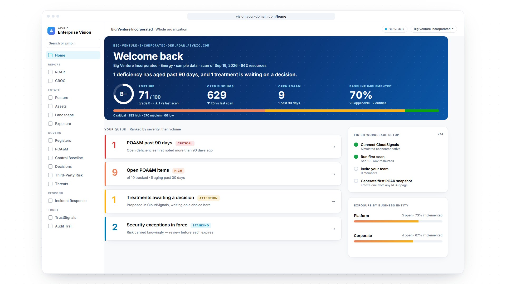

See.
Lives inPortal
AiVRIC Enterprise Vision turns every cloud account, finding and framework into one security posture your board can read, tracks every fix to closure, and publishes the proof your customers ask for, from one workspace your team runs.

Screens rebuilt from the Big Venture Incorporated demo workspace in Enterprise Vision. All figures are sample data.
Figures from the Big Venture Incorporated demo workspace (sample data), scan of Sep 19, 2026.
The glossary
Security programs are run in a handful of verbs. Enterprise Vision gives each one a home, and every home reads from the same numbers.
Continuous compliance
Controls are cross-walked once. Each scan updates the pass rate for every framework you answer to, so the compliance dashboard your auditor sees and the posture score your board sees never disagree.
Framework guides
Run it in AiVRIC Enterprise Vision
What you run
Where it runs
Connected data sources
Cloud security posture, risk operations and continuous compliance from your cloud estate, landing as findings in your workspace. The system of record that decisions write back to.
Full-stack observability of production language models, reporting into the same workspace.
Questions
GRC software for running security, compliance and risk as one program. It brings your cloud findings, risk register, POA&M, control baseline, decisions, threat intelligence and trust page into one workspace, and reports them through ROAR and GROC.
It is a severity-weighted pass ratio across every check in a scan, graded out of 100. The demo workspace scores 71, a B−, across 2,835 checks. One formula feeds every view, so the Portal, ROAR and GROC always agree.
A Plan of Action and Milestones is the official record of pending remediation. Enterprise Vision de-duplicates scan-derived and manual findings into one master per deficiency, gives each an owner, and flags anything open past 90 days.
ROAR is the Risk and Opportunities Assessment Report. Each scan produces an executive summary, top risks scored likelihood × impact, top opportunities, a remediation roadmap and trends, ready to freeze as a snapshot for the board.
No. TrustSignals publishes an approved snapshot of bands and coverage — security, compliance, privacy, resilience and AI governance — never raw findings. Documents stay in your own SharePoint, Drive or URL.
The demo workspace reports PCI DSS 4.0, NIST CSF 2.0, SOC 2, CIS Azure 3.0, NIS2, ISO 27001:2022, GDPR and CIS AWS 2.0 from the same scan. Controls also cross-walk to the HIPAA Security Rule; see the HIPAA guide.
SaaS, self-hosted or air-gapped, with EU data residency available. Each workspace is single tenant, with named users signing in through single sign-on and MFA at your identity provider, and every action on an append-only audit trail.
Book a walkthrough of AiVRIC Enterprise Vision on a demo workspace. Bring your questions, and we’ll show you real screens.
Screens show sample data from a fictitious demo workspace.